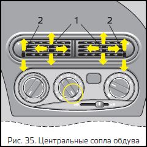
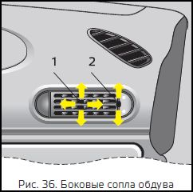
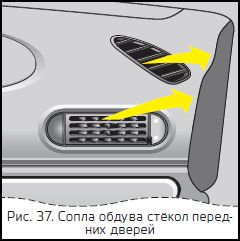
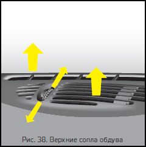
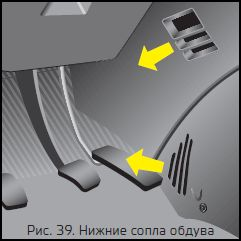
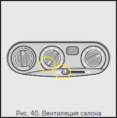
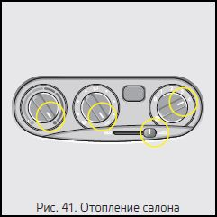
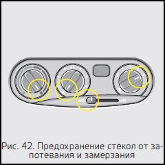
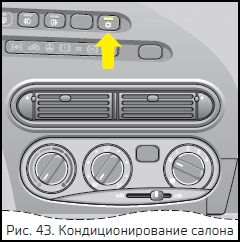

Chevrolet NIVA-ОПИСАНИЕ АВТОМОБИЛЯ:Органы управления и приборы
Сопла обдува
Центральные сопла обдува
рис. 35. Направления подачи воздуха регулируются рычагами направляющих лопаток центральных сопел 1 путем изменения положения заслонок вверх или вниз, а регулятор интенсивности подачи воздуха 2 открывает или закрывает полностью центральные сопла обдува.
В зависимости от положения температурного переключателя обеспечивается комфортный обдув верхнего пространства салона неподогретым или тёплым воздухом.
Для усиления притока воздуха включить вентилятор обдува и установить средний поворотный переключатель в положение.
 Боковые сопла обдува,
рис. 36. Подача воздуха регулируется рычагами направляющих лопаток боковых сопел 1 путём изменения положения заслонок вверх или вниз, а регулятор интенсивности подачи воздуха 2 открывает или закрывает полностью боковые сопла обдува.
Направление потока воздуха можно отрегулировать так, что можно создать теплую воздушную подушку на участке дверей в холодную погоду.
Для усиления притока воздуха включить вентилятор обдува и установить средний поворотный переключатель
в положение
 Сопла обдува стёкол передних дверей,
рис. 37. Установите рычаг управления заслонкой в крайнее левое положение, рис. 33 и средний поворотный переключатель, рис. 35 в положение
:
• холодный или прогретый воздух будет направлен в сторону ветрового стекла и к боковым стёклам (в основном на участках установки наружных зеркал).
 Верхние сопла обдува,
рис.38. Установите рычаг управления заслонкой в крайнее левое положение
• холодный или прогретый воздух будет направлен в сторону ветрового стекла. Средний поворотный переключатель в положении
• при открытой заслонке регулятором дополнительной подачи воздуха обеспечивается дополнительная подача воздуха.
 Нижние сопла обдува,
рис.39. Неподогретый или тёплый воздух подаётся в нижнюю часть салона (в зоны ног водителя и пассажиров). Для усиления притока воздуха переключить вентилятор обдува на более высокую ступень и установить распределитель воздуха средний поворотный переключатель в положение, рис.35.
Вентиляция салона,
рис.40. В крайнем левом положении
• через верхние сопла обдува и сопла обдува стёкол передних дверей, если перевести средний поворотный переключатель в положение
• через боковые и центральные сопла, если средний поворотный переключатель перевести в положение
• через нижние сопла в зону ног водителя и пассажиров, если средний поворотный переключатель находится в положении
Отопление салона
Температура воздуха, подаваемого в салон, регулируется левым поворотным переключателем, а интенсивность его подачи – положением правого поворотного переключателя (электровентилятор) отопителя, рис.41.
После размораживания ветрового стекла и стёкол передних дверей вращением ручки среднего поворотного переключателя выберите желаемое направление подачи воздуха в салон:
или через
или
Кроме того, при открытой заслонке регулятором дополнительной подачи воздуха средний поворотный переключатель в положении
С целью ускорения прогрева салона на стоящем автомобиле включайте режим рециркуляции (– рычаг управления заслонкой находится в крайнем правом положении).
При движении режим рециркуляции необходимо отключать, так как это приводит к запотеванию стёкол.
Предохранение стёкол от запотевания и обмерзания,
рис.42. Для предохранения ветрового стекла и стёкол дверей от запотевания в летнее время достаточно направить на них холодный воздух.
Для этого установите средний поворотный переключатель в положение
Для размораживания стёкол необходимо направить на них подогретый воздух, для чего дополнительно переведите левый поворотный переключатель в зону, отмеченную красным цветом и, при необходимости, включите правый поворотный переключатель (электровентилятор) на максимальный режим.
Для предохранения заднего стекла от запотевания и обмерзания включите кнопку – электрообогрев стекла.
КОНДИЦИОНЕР
Система кондиционирования воздуха предназначена для совместной работы с системами отопления и вентиляции в целях обеспечения максимального комфорта в любых погодных условиях.
Система кондиционирования воздуха функционирует только при работающем двигателе и включенном вентиляторе обдува.
Нажать = включено, включается контрольная лампа, встроенная в переключатель, рис.43.
Обязательно включить вентилятор, рис.31, на скорость отличную от 0.
Нажать ещё раз = выключено, выключается контрольная лампа, встроенная в переключатель.
Включение системы воздушного кондиционирования способствует устранению запотевания ветрового стекла.
Внимание
При очень высокой температуре в салоне перед запуском двигателя дайте раскалённому воздуху возможность покинуть салон автомобиля, открыв окна.
Во время работы кондиционера следует закрывать окна для исключения выхода охлаждённого воздуха наружу.
Работа кондиционера приводит к некоторому увеличению расхода топлива.
Следует выключать кондиционер при движении автомобиля на малых скоростях в условиях повышенной температуры воздуха и при высокой нагрузке двигателя для исключения экстремально высоких температур в подкапотном пространстве автомобиля.
Техническое обслуживание Для обеспечения эффективности работы системы кондиционирования воздуха её необходимо включать на короткое время не реже одного раза в месяц, вне зависимости от погоды и времени года.
Самостоятельное устранение неполадок в работе системы не допускается. Обратитесь за консультацией к официальному дилеру ЗАО «Джи Эм- АВТОВАЗ».